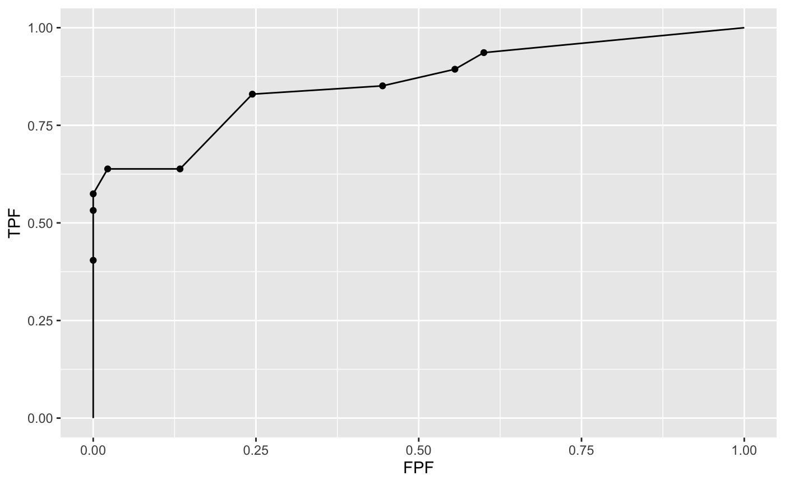

DfFroc2Roc.RdConvert an FROC dataset to a highest rating inferred ROC dataset
DfFroc2Roc (dataset)
| dataset | The FROC dataset to be converted, RJafroc-package. |
|---|
An ROC dataset
The first member of the ROC dataset is NL, whose 3rd dimension has
length (K1 + K2), the total number of cases. Ratings of cases (K1 + 1)
through (K1 + K2) are -Inf. This is because in an ROC dataset
FPs are only possible on non-diseased cases.The second member of the list is LL.
Its 3rd dimension has length K2, the number of diseased cases. This is
because TPs are only possible on diseased cases. For each case the
inferred ROC rating is the highest of all FROC ratings on that case. If a case has
no marks, a finite ROC rating, guaranteed to be smaller than the rating on
any marked case, is assigned to it. The structure is shown below:
NL Ratings array [1:I, 1:J, 1:(K1+K2), 1], of false positives, FPs
LL Ratings array [1:I, 1:J, 1:K2, 1], of true positives, TPs
lesionNum array [1:K2], number of lesions per diseased case
lesionID array [1:K2, 1], labels of lesions on diseased cases
lesionWeight array [1:K2, 1], weights (or clinical importances) of lesions
dataType "ROC", the data type
modalityID [1:I] inherited modality labels
readerID [1:J] inherited reader labels
rocDataSet <- DfFroc2Roc(dataset05) p <- PlotEmpiricalOperatingCharacteristics(rocDataSet, trts = 1, rdrs = 1) print(p$Plot)str(rocDataSet)#> List of 8 #> $ NL : num [1:2, 1:9, 1:92, 1] 6 5 0 0 8 6 0 0 2 5 ... #> $ LL : num [1:2, 1:9, 1:47, 1] 5 9 0 10 8 9 0 7 0 5 ... #> $ lesionNum : num [1:47] 1 1 1 1 1 1 1 1 1 1 ... #> $ lesionID : num [1:47, 1] 1 1 1 1 1 1 1 1 1 1 ... #> $ lesionWeight: num [1:47, 1] 1 1 1 1 1 1 1 1 1 1 ... #> $ dataType : chr "ROC" #> $ modalityID : Named chr [1:2] "1" "2" #> ..- attr(*, "names")= chr [1:2] "1" "2" #> $ readerID : Named chr [1:9] "1" "2" "3" "4" ... #> ..- attr(*, "names")= chr [1:9] "1" "2" "3" "4" ...## in the following example, because of the smaller number of cases, ## it is easy to see the process at work: set.seed(1);K1 <- 3;K2 <- 5 mu <- 1;nuP <- 0.5;lambdaP <- 2;zeta1 <- 0 lambda <- UtilPhysical2IntrinsicRSM(mu,lambdaP,nuP)$lambda nu <- UtilPhysical2IntrinsicRSM(mu,lambdaP,nuP)$nu Lmax <- 2;Lk2 <- floor(runif(K2, 1, Lmax + 1)) frocDataRaw <- SimulateFrocDataset(mu, lambda, nu, zeta1, I = 1, J = 1, K1, K2, lesionNum = Lk2) hrData <- DfFroc2Roc(frocDataRaw) print("frocDataRaw$NL[1,1,,] = ");print(frocDataRaw$NL[1,1,,])#> [1] "frocDataRaw$NL[1,1,,] = "#> [,1] [,2] [,3] [,4] #> [1,] 2.4046534 0.7635935 -Inf -Inf #> [2,] -Inf -Inf -Inf -Inf #> [3,] 0.2522234 -Inf -Inf -Inf #> [4,] 0.4356833 -Inf -Inf -Inf #> [5,] -Inf -Inf -Inf -Inf #> [6,] -Inf -Inf -Inf -Inf #> [7,] -Inf -Inf -Inf -Inf #> [8,] 0.8041895 0.3773956 0.1333364 -Inf#> [1] "hrData$NL[1,1,1:K1,] = "#> [1] 2.4046534 -0.7477766 0.2522234#> [1] "frocDataRaw$LL[1,1,,] = "#> [,1] [,2] #> [1,] -Inf -Inf #> [2,] 1.5036080 -Inf #> [3,] 0.8442045 -Inf #> [4,] 1.0467262 -Inf #> [5,] -Inf -Inf#> [1] "hrData$LL[1,1,,] = "#> [1] 0.4356833 1.5036080 0.8442045 1.0467262 0.8041895## following is the output ## [1] "frocDataRaw$NL[1,1,,] = " ## [,1] [,2] [,3] [,4] ## [1,] 2.4046534 0.7635935 -Inf -Inf ## [2,] -Inf -Inf -Inf -Inf ## [3,] 0.2522234 -Inf -Inf -Inf ## [4,] 0.4356833 -Inf -Inf -Inf ## [5,] -Inf -Inf -Inf -Inf ## [6,] -Inf -Inf -Inf -Inf ## [7,] -Inf -Inf -Inf -Inf ## [8,] 0.8041895 0.3773956 0.1333364 -Inf ## > print("hrData$NL[1,1,1:K1,] = ");print(hrData$NL[1,1,1:K1,]) ## [1] "hrData$NL[1,1,1:K1,] = " ## [1] 2.4046534 -Inf 0.2522234 ## > print("frocDataRaw$LL[1,1,,] = ");print(frocDataRaw$LL[1,1,,]) ## [1] "frocDataRaw$LL[1,1,,] = " ## [,1] [,2] ## [1,] -Inf -Inf ## [2,] 1.5036080 -Inf ## [3,] 0.8442045 -Inf ## [4,] 1.0467262 -Inf ## [5,] -Inf -Inf ## > print("hrData$LL[1,1,,] = ");print(hrData$LL[1,1,,]) ## [1] "hrData$LL[1,1,,] = " ## [1] 0.4356833 1.5036080 0.8442045 1.0467262 0.8041895 ## Note that rating of the first and the last diseased case came from NL marks